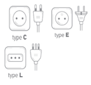
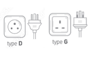

Indie
In Indie worden de type D en M stopcontacten het meest gebruikt.

Indonesie
In Indonesie worden de type C en F stopcontacten het meest gebruikt.
Bali
In Bali worden de type C en F stopcontacten het meest gebruikt.

Mongolie
In Mongolie worden de type C en E stopcontacten het meest gebruikt.
Iran
In Iran worden de type C en F stopcontacten het meest gebruikt.

Saudi Arabie
In Saudi Arabie worden de type A, B, C en G stopcontacten het meest gebruikt.

Pakistan
In Pakistan worden de type C en D stopcontacten het meest gebruikt.

Turkije
In Turkije wordt het type F stopcontact het meest gebruikt.

Jemen
In Jemen worden de type A, B en G stopcontacten het meest gebruikt.

Syrië
In Syrië worden de type C, E en L stopcontacten het meest gebruikt.

Sri Lanka
In Sri Lanka wordt het type D en G stopcontact het meest gebruikt.
Afghanistan
In Afghanistan worden de type C en F stopcontacten het meest gebruikt.